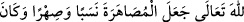
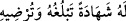

Hz. Ali, “Ey Allah’ın rasûlü, ben onun nikâhını kabul ettim” dedi. Hz. Peygamber
(s.a.) de “Allah ikiniz için de mübarek kılsın.” buyurdu.
İnsanu’l-uyûn’da der ki: “Fâtıma (r.a.)’nın Ali (r.a.) ile evlendirilmesi hicretin ikinci
yılının Ramazan ayındadır. O zaman Fâtıma (r.a.) on beş, Ali (r.a.) ise yirmi bir buçuk
yaşındaydı. Ali (r.a.), Sa’d (r.a.)’dan bir koç ve ensardan bir topluluktan birkaç sâ‘
mısır unu alarak düğün yemeği verdi.
Ali (r.a.), Fâtıma (r.a.)’yı isteyince Rasûlullah (s.a.) kızına: “Ali, seninle evlenmek
istiyor.” dedi. Fâtıma (r.a.) sükût etti.[238] Bir rivâyete göre: “Ey kızım! Amcanın oğlu
seninle evlenmek istiyor, ne dersin?” diye sordu. Fâtıma (r.a.) ağladı, sonra: “Ey
babacığım! Sanki sen beni Kureyş’in fakirine sakladın!” dedi. Bunun üzerine Rasûlullah
(s.a.): “Beni hak ile gönderene yemin olsun ki, semâdan Allah’ın izni gelinceye kadar
bu konuda konuşmayacağım.” buyurdu. Fâtıma (r.a.): “Allah’ın ve Rasûlü’nün razı
olduğuna ben de râzıyım.” dedi.[239]
Daha önce Ebû Bekir ve Ömer (r.a.) da Fâtıma’ya talib olmuş Hz. Peygamber (a.s.)
onlara: “Onun hakkında Allah’ın hükmünü bekleyin.” demişti. Bunun üzerine Ebû
Bekir ve Ömer (r.a.), Ali (r.a.)’ a Fâtıma ile evlenme talebinde bulunmasını söylediler.
Ali (r.a.) der ki: “Onlar benim gafil olduğum bir işte beni uyardılar. Ben de
Peygamber (s.a.)’e gelerek; “Beni Fâtıma ile evlendir.” dedim. Rasûlullah (s.a.): “Senin
bir şeyin var mı?” dedi. Ben de: “Atım ve zırhım var” dedim. Rasûlullah (s.a.), “Atın
sana lâzım. Zırhına gelince, onu sat.” buyurdu. Onu dört yüz seksen dirheme sattım.
Sonra Peygamber (s.a.)’e geldim, parasını kucağına koydum. Ondan bir avuç aldı ve:
“Ey Bilâl! Bununla temiz ve helâl bir şey satın al” buyurdu.
Nikâh akdini yapmak isteyince bir hutbe îrâd etti. Hutbenin bir kısmı şöyledir:
(Allah’a hamdolsun. O, nimetiyle övülen, kudreti sebebiyle kendisine ibâdet
olunandır. Mahlûkâtı kudretiyle yarattı ve onları hikmetiyle birbirinden ayırdı.)”
Sonra Allah Teâlâ evliliği neseb ve akrabalık bağı kıldı. Rabbinin her şeye gücü
yeter. Sonra Allah bana Fâtıma’yı Ali’ye dörtyüz miskal gümüş karşılığı mehir ile
evlendirmemi emretti. Ey Ali, râzı oldun mu?” buyurdu.
Ali (r.a.) da bir hutbe irad ettikten sonra “Razı oldum” dedi. Hutbenin bir kısmı
şöyledir: